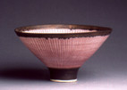
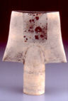
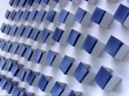
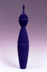
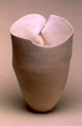

Lucie Rie

Hans Coper

Piet Stockmans
FORREST SNYDER
The exhibition Ceramic Modernism: Hans Coper, Lucie Rie, and Their Legacy recently opened at the Gardiner Museum (http://www.gardinermuseum.on.ca/), Toronto, Canada. On 26 May 2002, a group of artists and critics gathered from around the globe for a one day symposium to celebrate the one hundredth birthday of Lucie Rie, her work, and her impact on the ceramic arts. The exhibition runs through 2 September 2002.
Leading the visitor into the exhibition is a work by Piet Stockmans, 324 small white and cobalt blue porcelain boxes hang on the entrance wall. The simplicity of their design sets the tone of this show featuring the works of the founders of Ceramic Modernism, Lucie Rie and Hans Coper. However, if the goal is a distillation — the essence — of Lucie Rie’s and Hans Coper’s modernist works and influence, their pure vision is lost in an overwhelming and unequal mix.
The assembled collection does offer excellent examples of Lucie Rie’s and Hans Coper’s ceramics. Rie’s bowls with their dark incised lines and their spreading, uplifting forms and Coper’s precise, geometric forms with methodically scraped black to white surfaces demonstrate these artists’ singular dedication. All of Coper and Rie’s works are monumental in idea rather than stature; further, all share common properties: thinness, incised or inlayed design, precise angular forms, and a vessel orientation. Their vision is exacting in its articulation, definitive of a commitment to their ideals. The black teapots, cups and saucers, pitchers, and bowls with incised white lines cannot help but be recognized as great pottery. In these collaborative works, the singleness of mind and hands of Rie and Coper develop synchronicity.
A number of contemporary artists are working within modernist confines. Notably, the Dutch artist Wouter Dam, exhibiting brightly colored tubular sculptures, and Canadian Roseline Delisle, showing sharp angular totems with precisely inscribed lines, require no translation from Rie or Coper, the conceptual links confidently clear. Gwyn Hanssen Pigott, a student of Coper’s, finds herself firmly situated with them as well. Pigott’s fine asymmetric bowls are beautifully surfaced with an ever changing semi-gloss glaze. Although the initial lead of Coper and Rie can be found in her work, it cuts a singular path all its own.
There are some wonderful relationships to be recognized, too. The works of Rie, Coper, Ruth Duckworth, and Delisle compliment one another to great benefit, offering greater understanding of all of their aesthetic visions. Others, although a step removed are with familiar ties — Richard Devore’s sensitively constructed vase forms being prime examples.
However, DeVore’s pieces highlight a problem with this exhibition, namely exceedingly poor display. One is unable to see the very important insides or bottoms of his pieces without stepping onto the plywood plinth. Just as disconcerting, none of the works, DeVore’s or others, can be seen in the round. While pieces such as Ron Nagle’s four sculptures may be exquisitely frontal in their orientation, seeing these works, not to mention Rie’s or Coper’s, from all sides would greatly help the understanding and appreciation of the artistry. Finally, many of the pieces are inadequately lit. Usually, seeing a Rudy Staffel Light Gatherer vase is a wonder. In this instance, however, his vases are so poorly lit, that is to say they are practically in the dark, that they are impossible to appreciate. Simply, an exhibition of such potential should not have to battle with badly designed exhibition space, poor display, and inadequate lighting.
One can only guess how or why this particular group of work was selected. The works do not appear to be grouped logically, chronologically, or aesthetically, thus confusing the viewer’s understanding of the modernist legacy of Coper and Rie. Although some exhibitors’ paths have crossed as students or contemporaries of Rie or Coper, Allison Britton or Shoji Hamada for example, the show strains to make any conceptual, aesthetic, or technical link. While perhaps remarkable within a different context, here many works provide little more than filler. Recognizing this discord, one artist, Ron Nagle, in his symposium presentation called himself the “Anti-Coper” and openly called into question the principals’ relevance to his work.
Indeed, the exhibition could have made the links between artists much more clear. Tony Hepburn had Lucie Rie and Hans Coper as teachers and notes them as strong influences in his early development. This kind of relationship brings the Rie and Coper legacy into the present, but how is a viewer to know? While Hepburn’s piece “ 5 + 5 = 0 ” has no overt connection to Rie’s and Coper’s, he sites the connection this way, “my work does not resemble any of theirs, but their sense of discipline, their ability to be almost painfully self critical, their commitment to their craft and their single-mindedness of vision that never strayed, regardless of the forces at work around them, still resonates with me today.” Thus, Hepburn makes a strong case for the legacy of Rie and Coper, unfortunately many of the artists included in the current exhibition cannot claim such lineage. In the end, the exhibition could have been much more faithful to the vision of Rie and Coper, less is more.
Location: The Gardiner Museum of Ceramic Art 111 Queen's Park Toronto Ontario M5S 2C7 Canada 416-586-8080 http://www.gardinermuseum.on.ca

Roseline Delisle

Richard Devore